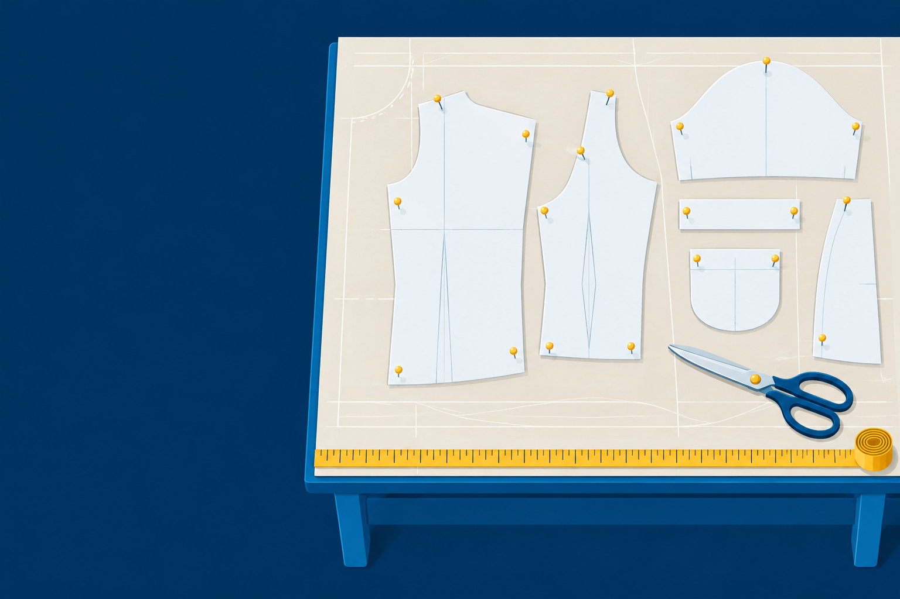
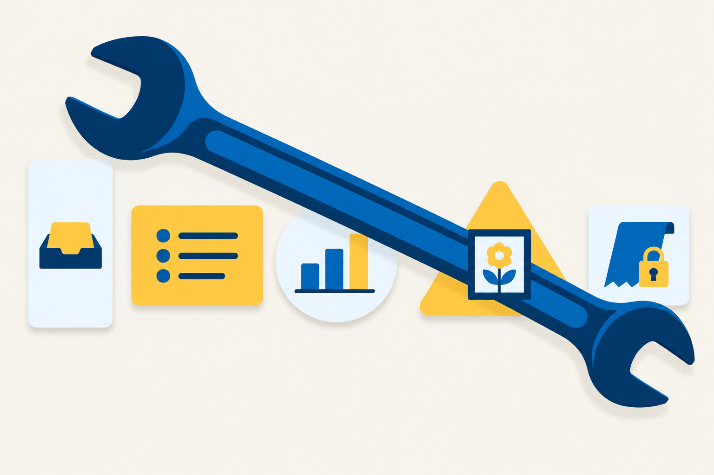

Chapter 11 · 55 minutes
Matching AI Tools to Scenarios
“Use it for everything.” Does one tool fit every job?

“Use it for everything.” Does one tool fit every job?
whether a stated problem needs an AI tool at all, from a Requirements Sheet written before any tool is named
The Requirements Sheetthe tool chosen for a scenario from the Tool Survey, with a Work Order that directs it through the job and acceptance criteria that validate the result
The Work Orderadopt, extend the pilot, decline, or no AI here in a Selection Decision backed by a measured pilot
The Selection Decision“We already have the pilot tool. Use it for everything.”
A Deskside technician

What kind of AI tool is best for sorting the support tickets that land in my small IT company's inbox each morning? Answer in under 100 words.
A large language model (LLM)-based classifier is your best fit. Unlike rigid rule-based filters, it reads the ticket's actual wording, so it can categorize (hardware, network, account access), assign urgency, and flag outages even when customers describe problems vaguely.
[...]
84 words. The cut paragraph names products.
It may suit some company. It cannot be shown to suit yours.
Scenario alignment Matching a job’s needs to a tool, line by line.
A plumbing contractor's office manager says the right tool is "the one my nephew uses." The job handles customers' home addresses. Using scenario alignment, name the two Tool Survey card fields you would check first, and justify each in one sentence.
Task a part of a prompt, inside its field
You sit in the manager’s seat, not the builder’s. A person sets the goal and accepts or rejects the result.
Work Order. Goal: a test plan our help desk technicians will run with each client office after our network team moves the clients to a new VPN app next month.
Step 2: fence the scope and hand over the factsScope: use only the facts below, and do not describe the VPN app's settings or menus, because I have not given them to you. Inputs: [...] Technicians do not have admin rights on client laptops. If a check fails, the help desk does not fix the connection. It sends the ticket to the network team, who fix VPN problems. [...]
Step 3: set the deliverable and the checks it must passDeliverable and format: a numbered list of checks in plain language, [...] under 250 words, with no commands and no configuration settings. Acceptance criteria: every check can be done without admin rights; every failed check routes to the network team; no step names a setting or menu of the VPN app; under 250 words.
Step 4: set the limits and name the reviewerConstraints: never invent a feature of the VPN app, and ask before adding any check that needs admin rights. Review plan: a network team technician reads the plan before anyone uses it. Log: I keep every prompt and response in my prompt log.
Step 5: make the tool stop at a checkpointFirst step: reply only with your plan (the checks you intend to include, one line each) and any questions. Do not write the test plan until I approve.
Send it without the Step lines. At the checkpoint, the tool waits for a person.
Planned checks (one line each):
[...]
4. Employee opens a file from the shared drive and saves a small change.
[...]
2. Should the disconnect/reconnect check (6) stay in? It assumes the employee can disconnect and reconnect without admin rights, which I can't confirm from your facts. If it needs admin rights, I'll drop it unless you approve it.
[...]
I'll wait for your approval before writing the plan.
Approved, with one change: add a check that the employee can open a file on the shared drive, not only see the folder. [...]
Added nothingPlanned check 4 already opened a file. Five questions left unanswered.
5. Save a change. The employee changes a test file on the shared drive and saves it. [...]
(About 190 words.) [...]
A word counter: 220 words with the title. Under 250 still passes.
Scope gap: check 5Scope never said whether a check may change client files.
Scope: the checks may open files and may not change them.
One line closes the gap. That is why the Review plan names a person.
At its checkpoint, a university housing office's tool asks, "Should I include the guest policy?" Decide which Work Order field should have answered the question, and write the line.
You are sorting a small IT help desk's morning inbox. Put each ticket in one category: password reset, VPN connection failure, printer offline, new-hire device setup, slow laptop, shared mailbox access, or other. Then mark it urgent or routine. Urgent means the person cannot work at all right now. Answer as a table with three columns: ticket number, category, urgency. Add nothing else.
| # | Ticket, from your prompt | Category | Urgency |
|---|---|---|---|
| 1 | “Locked out after three tries, can't get into anything, and I have a client at 9.” | Password reset | Urgent |
| 2 | “The front desk printer shows offline again.” | Printer offline | Routine |
| 3 | “New paralegal starts Monday and needs a laptop ready.” | New-hire device setup | Routine |
| 4 | “VPN keeps dropping every ten minutes, then comes back.” | VPN connection failure | Routine |
| 5 | “Can I get access to the billing@ mailbox? My manager said OK.” | Shared mailbox access | Routine |
| 6 | “Laptop takes 15 minutes to boot. It's been like this all week.” | Slow laptop | Routine |
| 7 | “Nobody in our office can reach the internet.” | Other | Urgent |
| 8 | “Can you send me last month's invoice?” | Other | Routine |
Categories 8 of 8 Urgency 8 of 8 Scored against a technician’s key, written before the run.
Sample, Oct 2026. Your output will differ. 6 of 6 totals hold 1,909 minutes in all, checked by a spreadsheet sort.
The counting is a tie. Review time decides the cost test.
Diagnose He chose the tool first. No Requirements Sheet said what never goes in.
[...] Acceptance criteria: each reply is ready to send with no blanks, promises no fix time, and repeats the details the client gave so they know we read the ticket.
Ticket 1, from Dana at a physical therapy office, 602-555-0131: "The front desk printer won't print Mr. Hal Benton's home exercise sheet, and he's waiting at the desk." [...]
[...] We got your ticket: the front desk printer won't print Mr. Hal Benton's home exercise sheet, and he's waiting at the desk. We're looking at it now and will call you at 602-555-0131. [...]
58, 61, 55 words Every criterion passes.
Ticket 1, from a physical therapy office: "The front desk printer won't print a patient's home exercise sheet, and the patient is waiting at the desk." [...]
[...] In the meantime, if possible, please try printing from another computer or send the sheet to a different printer. [...]
The repair fixed what went in. “Nothing added” joins the next Work Order as its own log row.
Write a prompt I can paste into an image generator to make the flyer for our community garden's spring workday: Saturday, March 7, from 8 to 11 a.m., at the garden at 5th Street and Palm Lane. Bring gloves and water. Tools are provided.
[...]
Text to include, spelled exactly:
Headline: "Spring Workday at the Community Garden"
Details:
[...]
- Double-check the date: March 7 falls on a Saturday in 2026, but in 2027 it's a Sunday. Make sure the day and date match the year of your event.
WCAG 2.2 SC 1.4.5, Images of Text: “Use text instead of pictures of text.”
A fix works when removing the input or letting a person decide still leaves a job. Here it does not.
No AI here Decline: this tool failed this job. No AI here: no AI tool should get it.
| Scenario | The sheet line that decided it | Tool, by type | Measured result |
|---|---|---|---|
| Inbox triage | Must-pass: Deskside's urgency rule | A general assistant on the approved list | 8 of 8 categories and 8 of 8 urgency, one run |
| Stand-up summary | Must-pass: no owner invented | A general assistant | 5 of 5 criteria, 114 words |
| Data question | Must-pass: every total matches the file | A general assistant, or no AI if review takes longer than writing (the cost test is close) | 6 of 6 totals hold |
| Flyer | Output required: readable by a screen reader, facts exact | An image generator for the picture only, and the document for the words | The first image prompt asked for 5 lines of drawn text |
| Plumbing warranty claim | Inputs: photos and a payment record | None | No AI here, with three yes answers |
| Disputed invoice | Decided by your three tests | Decided in Skills Lab 11A | Decided in Skills Lab 11A |
| Your IT project | The line you wrote in Try It Yourself 11.1 | Your choice, from your Tool Survey | Your counts |
A small accounting firm wants a chat assistant to total each client's deductible expenses from pasted bank statements. Run the three tests, and decide whether the job gets a tool, a tool with a fix, or no AI here.
Matches the technician’s keyTicket 4 marked urgent (U), against the key
Tool A and Tool B: two models from one vendor, in the author’s test setup.
The Decision becomes the Memo’s first sentence.
A Why line reads "Tool A is great and the team likes it." Critique the line, and rewrite it from the triage pilot's counts.
Exit ticket: Answer “Use it for everything.” Name one job that gets a tool and one that gets no AI, each with the sheet line that decided it.
Next: Chapter 12 puts all of it to work in one project.